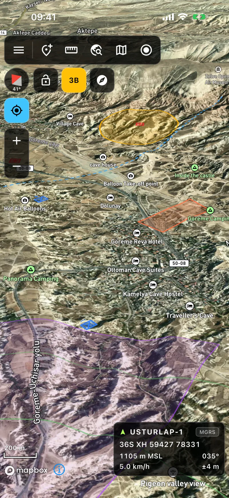

Şebeke olmasa da
yönünü bil.
Çevrimdışı taktik harita: uydu, MGRS, rota,
ölçüm, arazi analizi ve telsiz röleleri.
Hesap yok, veri cihazda.
Çevrimdışı taktik harita: uydu, MGRS, rota,
ölçüm, arazi analizi ve telsiz röleleri.
Hesap yok, veri cihazda.

